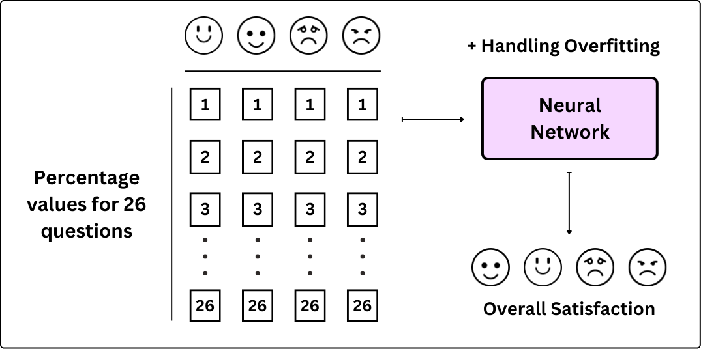
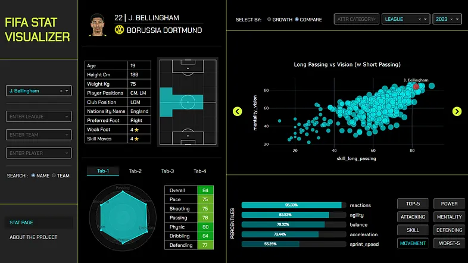
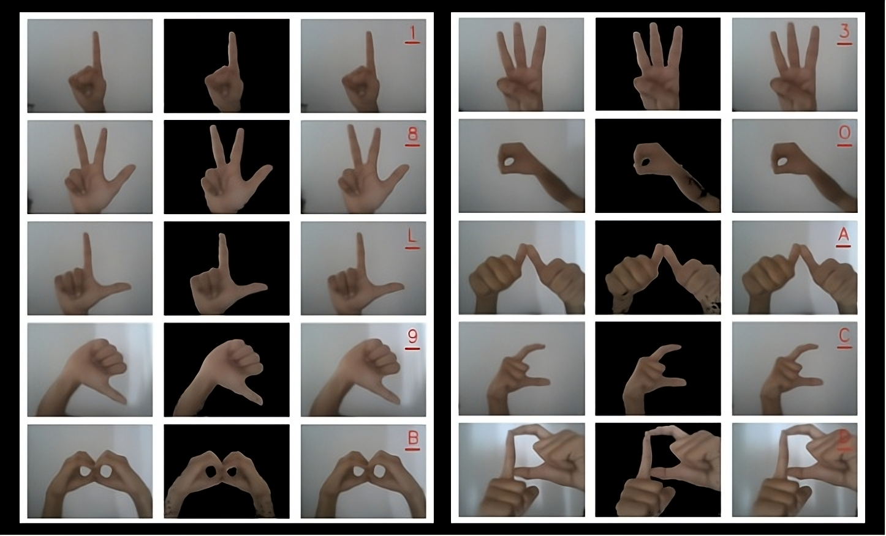
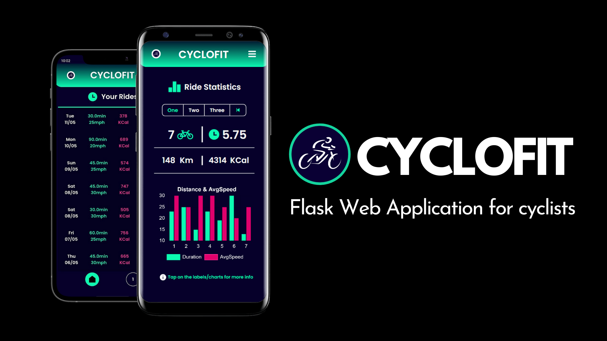

MSc. Data Science & Analytics
-/ University of Leeds, 2023-24 - First Class with Distinction
-/ Dissertation - Digital Twin for National Student Surveys (NSS)
Welcome to my portfolio! I'm a data enthusiast with a knack for uncovering actionable insights from complex datasets. My journey has equipped me with strong leadership, communication, and problem-solving skills, allowing me to collaborate across diverse teams and deliver results that drive growth and efficiency. Explore my work to see how I use data and innovation to create meaningful impact.
-/ University of Leeds, 2023-24 - First Class with Distinction
-/ Dissertation - Digital Twin for National Student Surveys (NSS)
-/ SRMIST, 2019-23 - First Class with Distinction (9.30/10)
-/ Dissertation - Indian Sign Language Recognition System (ISLCR)

Data Processing, Data Analytics, Data Visualization, Deep Learning, Research, Technical Writing
Dissertation for Master's course focused on building AI Digital Twins for the National Student Survey data. The project accommodates changes in the survey format while also understanding difference in student responses across countries. Highlights data understanding & operations along with knowledge of AI methods and extensive research.

Dash, Plotly, Python, Data Visualisation, Data Analytics, Dashboard Building, Computer Vision, Visual Analytics

Computer Vision, Tensorflow, Scikit-Learn, Deep Learning, Artificial Intelligence, Python, Image Processing, Research
Vision based Character Recognition System built with Deep Learning, Python, and OpenCV for Indian Sign Language characters. Operates on a Computer Vision based application that takes live camera feed as input and produces text for the character captured and predicted.
Flask-based web application for Cyclists to interact with their cycling progress. Consists of a login system, password reset methods, data entry forms, several ChartJS charts to visualize data, and a custom point system & leaderboard system to gamify the cycling progress. Uses SQLite and SQLAlchemy databases for seamless data handling.

Flask, SQLite, SQLAlchemy, Bootstrap, ChartJS, HTML, CSS, Pillow, Web/Mobile Application, Data Handling, UI/UX
Ayris Global, Sept-2024 to Present
-/ Collaborated with 3 senior managers to optimise and align data strategies with business objectives
-/ Assisted in designing efficient database pipelines, saving approximately 10% of technical resources
-/ Advised on developing corporate profiles for networking platforms such as LinkedIn and Glassdoor
AdVenture NorthEast, Sept-2024 to Oct-2024
-/ Designed and successfully built in-house analytics dashboard focusing on the company’s strategies
-/ Assisted in building predictive models that helped in customer segmentation and forecasting sales
-/ Presented the work to the strategy team with data-driven recommendations for future dashboards
MSRF, Mar-2022 to Sep-2022
-/ Implemented a system using Generative Adversarial Networks for style transfer on 5 painting styles
-/ Facilitated weekly knowledge-sharing sessions as team lead, fostering cross-functional collaboration
-/ Collaborated with supervisors to gather requirements and ensure timely project completion
Next Tech Labs SRM, Sep-2020 to Jun-2021
-/ Led a cross-functional team in hackathons, resulting in successful completion of four projects
-/ Mentored junior associates, contributing to overall professional development and skill acquisition
-/ Managed the four projects with strong planning, task prioritisation, and time management skills